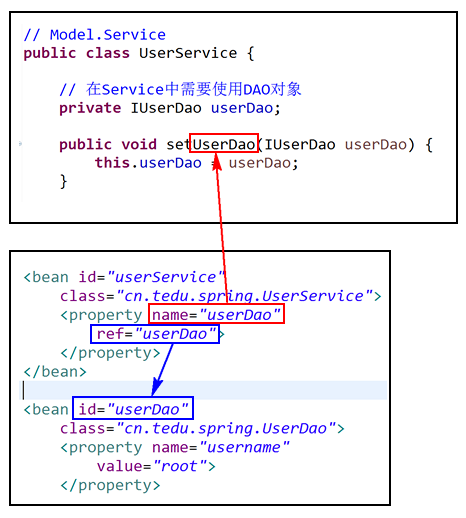
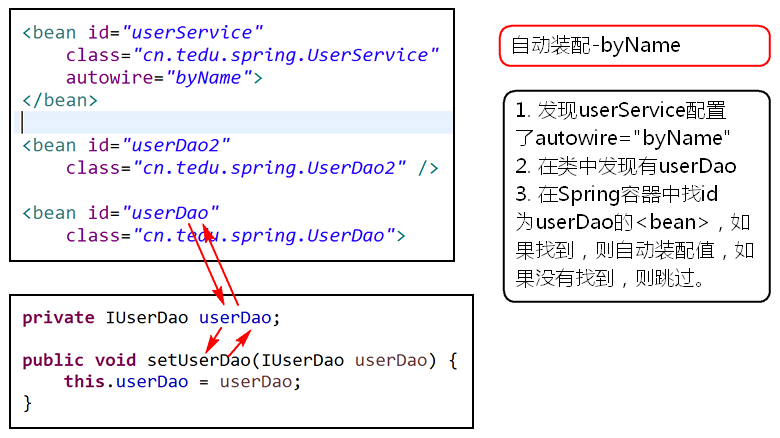

1. 【常用】通过SET方法注入属性的值（续）
如果需要注入的属性的值并不是基本值（基本数据类型或String），则值需要配置为一个<bean>，且，注入值时，使用ref="bean-id"来确定属性的值：
;
小结：为属性注入值时，如果类型是基本型，使用value进行配置，如果类型是引用，需要配置另一个bean来创建值的对象，然后通过ref进行配置。
2. 【不常用】通过构造方法注入属性的值
首先，类中应该存在带参数的构造方法：
public class User {
public String name;
public String from;
public User(String name, String from) {
super();
this.name = name;
this.from = from;
}
}在配置时，通过<constructor-arg>配置构造方法的参数的值，如果有个参数，则需要多个节点，每个节点配置1个属性，且每个节点都必须添加index属性，表示配置的是第几个参数，取值为从0开始编号的数字，根据值的类型不同，继续配置value或ref来决定属性的值：
<bean id="user" class="cn.tedu.spring.User">
<constructor-arg index="0"
value="LiuGB">
</constructor-arg>
<constructor-arg index="1" value="HeBei"></constructor-arg>
</bean>3. 注入集合类型的值
例如存在类：
public class SampleBean {
public List<String> names;
public void setName(List<String> names) {
this.names = names;
}
}然后，添加配置：
<bean id="sampleBean" class="cn.tedu.spring.SampleBean">
<property name="names">
<list>
<value>Jame</value>
<value>Lucy</value>
<value>David</value>
<value>Tom</value>
<value>Alex</value>
</list>
</property>
</bean>因为names属性的类型是List，所以，在注入值时，<property>节点中添加子级的<list>节点进行配置，在<list>中的每组<value>节点表示1个值。
如果属性是Set类型的，则使用<set>节点进行配置即可：
<property name="cities">
<set>
<value>Hangzhou</value>
<value>Beijing</value>
<value>Shanghai</value>
<value>Shenzhen</value>
<value>Guangzhou</value>
</set>
</property> 如果属性是Map类型的，则需要使用<map>及其子级的<entry>节点进行配置：
<property name="session">
<map>
<entry key="username" value="Jack"/>
<entry key="password" value="1234"/>
<entry key="from" value="Nanjing"/>
</map>
</property>还有Properties类型，通常在使用时，会自定义一个???.properties文件，例如：
url=jdbc:mysql://192.168.0.251:3306/db_name?useUnicode=true&characterEncoding=utf8
driver=com.mysql.jdbc.Driver
username=root
password=root
initialSize=2
maxActive=10然后，通过Spring框架读取该文件的信息：
<util:properties id="config" location="classpath:db.properties"></util:properties>以上<util:properties>节点本质上也是一个<bean>，在注入值时：
<property name="dbConfig"
ref="config">
</property>当然，Properties类型的节点是可以直接配置的，例如：
<property name="dbConfig">
<props>
<prop key="name">Jack</prop>
</props>
</property>事实上，关于List、Set、Map也存在<util:list>等类似节点，使用频率较低。
以上2种为Properties类型的数据注入值的做法都是有用的！而为List、Set、Map类型的数据注入值的应用场景相对较少。
4. 自动装配（Auto-wire）
自动装配表示由Spring自动的为属性注入值，即：无需配置各<property>节点！可以解决需要注入多个值时添加多个<property>节点导致的配置项太多的问题！
当需要自动装配时，为<bean>节点添加autowire属性的配置即可，常用的取值有byName和byType：
当取值为byName时
表示“根据名称实现自动装配”，即：当某个<bean>配置了autowire="byName"时，Spring会检索当前类中的SET系列方法，根据SET方法的名称还原出属性名，并且尝试在Spring容器中找到bean-id相同的对象，如果找到，则自动为这些属性赋值，如果没有找到，也不会报告任何错误，只是相关属性没有被赋值而已！这种做法本质上还是通过SET方式注入的，所以，需要被注入的属性一定要有SET方法！而SET方法的名称一定与值对应的bean-id是匹配的！

当取值为byType时
顾名思义，当取值为byType时，会“根据类型实现自动装配”，例如private IUserDao userDao;时，会尝试在Spring容器中查询类型符合IUserDao类型的<bean>，如果找到，则自动装配，否则，将跳过。
使用这种做法时，无需关心各个名称（属性名、方法名、bean-id），但是，需要保证“能匹配的bean只有1个”，否则，会出现NoUniqueBeanDefinitionException，并提示例如：expected single matching bean but found 2: userDao2,userDao。
小结
自动装配还有其它模式，暂不需要了解。
记住byName和byType的意义，及byType的注意事项。
自动装配虽然简单，但是，存在“是否注入值不明确”的问题，即：只能看到哪些<bean>配置了autowire="byName"或autowire="byType"，但是，这些类中的属性是否成功的注入了值、哪些属性是需要注入值的……等问题并不明确，也无从可查，所以，关于这种自动装配的做法是不推荐的！
5. Spring表达式
Spring表达式的基本格式是#{名称}，用于表示某个值，甚至，值可以是来自另一个<bean>的某个属性！
当某个注入的属性值是通过Spring表达式得到的，则应该配置为value=#{}格式。
关于Spring表达式：
如果获取另一个
<bean>中的某属性值，则使用#{bean-id.属性名}；如果获取另一个
<bean>中的某List集合中的某个值，则使用#{bean-id.List集合名[索引]}；如果获取另一个
<bean>中的某Map集合中的某个值，则使用#{bean-id.Map集合名.key}，还可以是#{bean-id.Map集合名['key']}。
1. 什么时候需要自定义构造方法？
如果某个类没有显式的添加构造方法，则编译器会自动添加公有的、无参数的构造方法，例如：
public class User {
}等效于：
public class User {
public User() {
super();
}
}如果显式的添加了构造方法，则编译器就不会添加任何构造方法！
通常，需要自定义构造方法的原因：不允许使用公有的、无参数的构造方法。
具体的表现：
限制创建对象，例如：单例模式；
强制要求得到某数据；
快速创建对象、确定某些属性的值。
2. List和Set的特性
List：顺序的，先存入的数据在前，后存入的数据在后；元素可重复；
Set：散列的，先存入的数据不一定在前，后存入的数据不一定在后；元素不可重复，如果尝试添加相同的数据，在Set中并不会不多项该元素，关于“是否相同”的评定依据是“2个数据的equals()对比结果为true，并且hashCode()的返回值必须相同”！
Set的本质是一个只关心key不关心value的Map！
Model：DAO
View：html/jsp
Controller：Servlet
View > Controller > Model（Service + DAO）
Service：登录
Service：注册
DAO：根据用户名查询用户信息